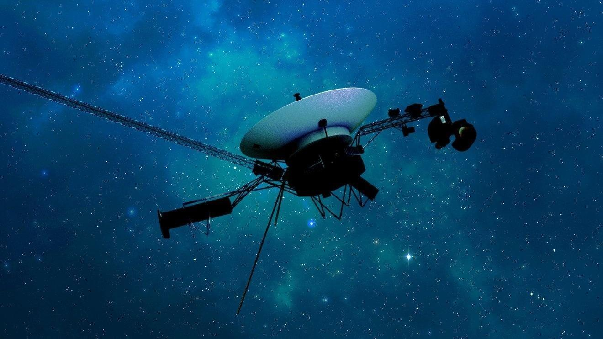

NASA Celebrates As 1977’s Voyager 1 Phones Home At LastVoyager 1 has finally returned usable data to NASA from outside the solar system after five months offline. Launched in 1977 and now in its 46th year, the probe has been suffering from communication issues since November 14. The same thing also happened in 2022. However, this week, NASA said that engineers were finally able to get usable data about the health and status of its onboard engineering systems. Slow Work Fixing Voyager 1 has been slow work. It’s currently over 15 billion miles (24 billion kilometers) from Earth, which means a radio message takes about 22.5 hours to reach it—and the same again to receive an answer. The problem appears to have been its flight data subsystem, one of the spacecraft’s three onboard computers. Its job is to package the science and engineering data before it’s sent to Earth. Since the computer chip that stores its memory and some of its code is broken, engineers had to reinsert that code into a new location. Next up for engineers at NASA’s Jet Propulsion Laboratory in California is to adjust other parts of the FDS software so Voyager 1 can resume sending science data. Beyond The ‘Heliopause’ The longest-running and most distant spacecraft in history, Voyager 1, was launched on September 5, 1977, while its twin spacecraft, Voyager 2, was launched a little earlier, on August 20, 1977. Voyager 2—now 12 billion miles away and traveling more slowly—continues to operate normally. Both are now beyond what astronomers call the heliopause—a protective bubble of particles and magnetic fields created by the sun, which is thought to represent the sun’s farthest influence. Voyager 1 got to the heliopause in 2012 and Voyager 2 in 2018. Pale Blue Dot Since their launch from Cape Canaveral, Florida, aboard Titan-Centaur rockets, Voyager 1 and Voyager 2 have had glittering careers. Both photographed Jupiter and Saturn in 1979 and 1980 before going their separate ways. Voyager 1 could have visited Pluto, but that was sacrificed so scientists could get images of Saturn’s moon, Titan, a maneuver that made it impossible for it to reach any other body in the solar system. Meanwhile, Voyager 2 took slingshots around the planets to also image Uranus in 1986 and Neptune in 1989—the only spacecraft ever to image the two outer planets. On February 14, 1990, when 3.7 billion miles from Earth, Voyager 1 turned its cameras back toward the sun and took an image that included our planet as “a mote of dust suspended in a sunbeam.” Known as the “Pale Blue Dot,” it’s one of the most famous photos ever taken. It was remastered in 2019. Wishing you clear skies and wide eyes. |
 |